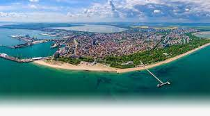
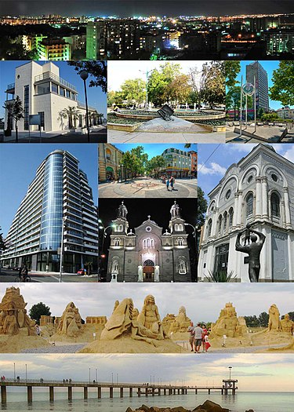

Бургас

Бурга̀с е най-големият град в Югоизточна България и вторият по големина на българското Черноморие,
а със своето землище от 253,644 km², той е вторият град по площ в България (след София).
До Бургас се намират:
-
най-голямата в Югоизточна Европа химическа и нефтена рафинерия,
която е и най-големият работодател в България;
-
международното и второто по натовареност българско летище;
-
най-голямото българско пристанище;
-
единственото нефтено пристанище в страната.
